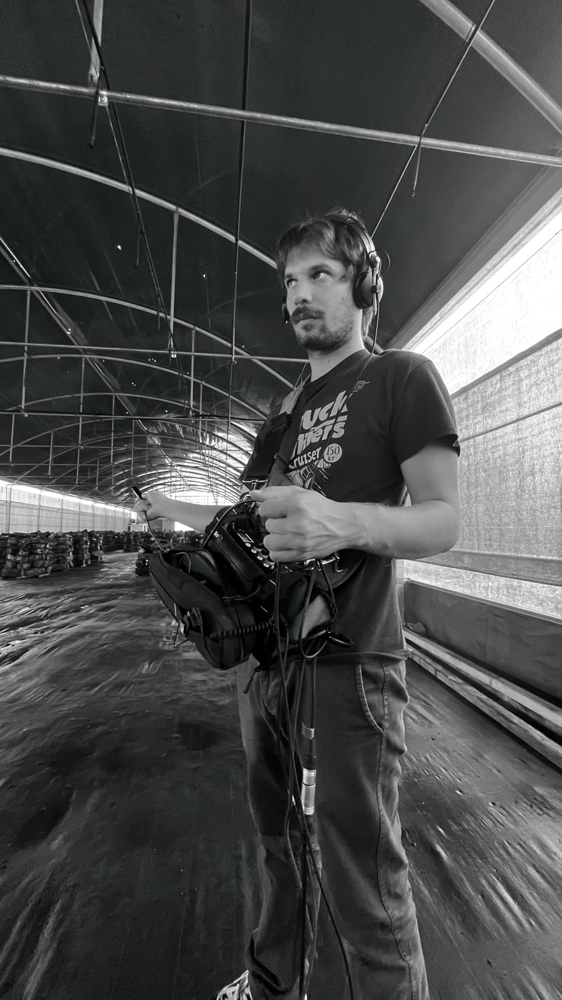
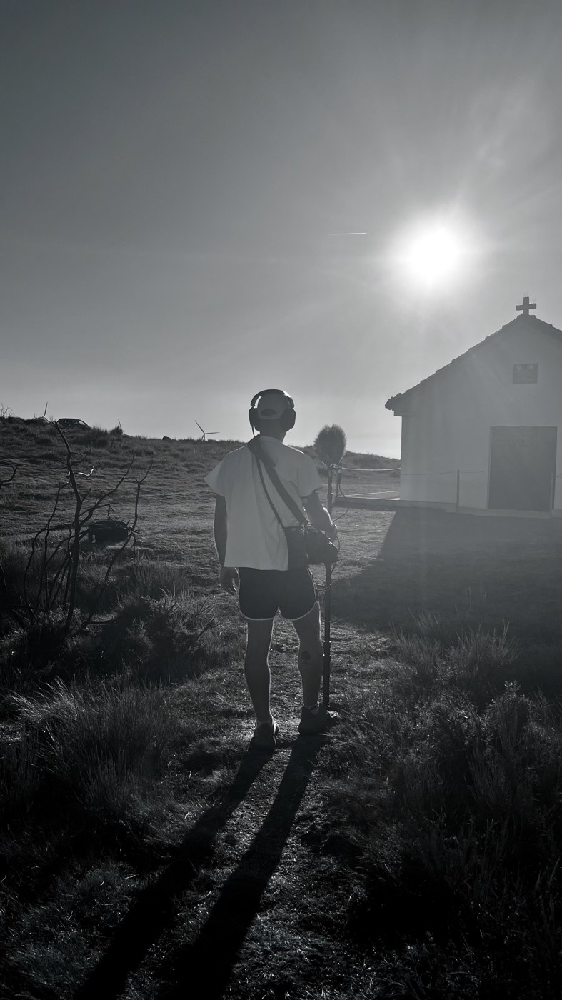
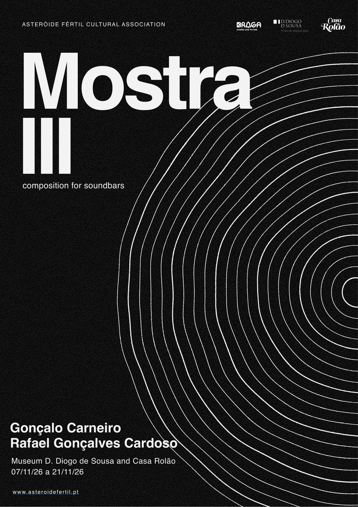

MostraIII
Composição para Soundbars
Para a III edição da Mostra, a Asteróide Fértil convidou dois artistas sonoros a trabalharem no formato instalativo, com uma premissa: comporem para soundbars. Gonçalo Carneiro, músico e sound designer e Rafael Gonçalves Cardoso, diretor de som em cinema e artista sonoro são os artistas convidados para a edição de 2026 da nossa exposição anual, que se desdobra em dois locais: o Museu D. Diogo de Sousa e a Casa Rolão.


